Abhijeet Kumar
CSD 201302197
% categories of circles and number of circles in each category % q2 clear all; clc; img= imread('circles.jpg'); % converting image to binary img = im2bw(img,30/255); %remove false cicles which were created because of binarisation img = imopen(img,strel('disk',2) ); figure , imshow(img) ; title('binarised-image after false circles removal'); cumulative_number_circles = []; img_new = {}; start_val=3; end_val=12; %part a % loop over all possible values of disc shaped strcturing element for i=start_val:end_val % get a structuring element structuring_ele = strel('disk',i); % opening of the image with the current structuring element img_open = imopen(img,structuring_ele); % no of connected components for having a dic size greater than equal to i temp = bwconncomp(img_open); cumulative_number_circles(i-start_val+1) = temp.NumObjects; %store the image for further use img_new(i-start_val+1) = {img_open}; %plot the image figure; imshow(img_open); title(strcat('circle with size >=',int2str(i))); end %clip the parts from there is no disc of that size or greater [temp,idx] = min(cumulative_number_circles); cumulative_number_circles = cumulative_number_circles(1:idx-1); img_new = img_new(1:idx-1); %part b % extract images category wise category_img = img_new; for i = length(cumulative_number_circles)-1:-1:1 category_img(i) = {cell2mat(img_new( i )) - cell2mat(img_new( i+1 ))}; end %draw the figures for i=1:length(cumulative_number_circles) figure; imshow( imopen (cell2mat(category_img(i)) ,strel('disk',2)) ); title(strcat('disk-radius',int2str(i+start_val-1 ))); end % part c %extract number of cicles in each category based on size number_circles= cumulative_number_circles; for i = length(cumulative_number_circles)-1:-1:1 number_circles(i) = cumulative_number_circles( i ) ... - cumulative_number_circles( i+1 ); end radius = start_val:1:idx+1; display(number_circles); display(radius);
number_circles =
5 71 50 43 12 50 57 18 1
radius =
3 4 5 6 7 8 9 10 11
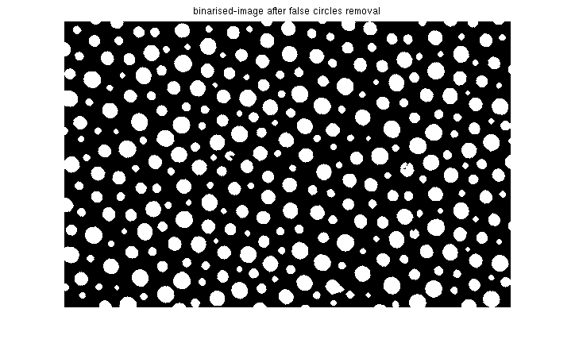 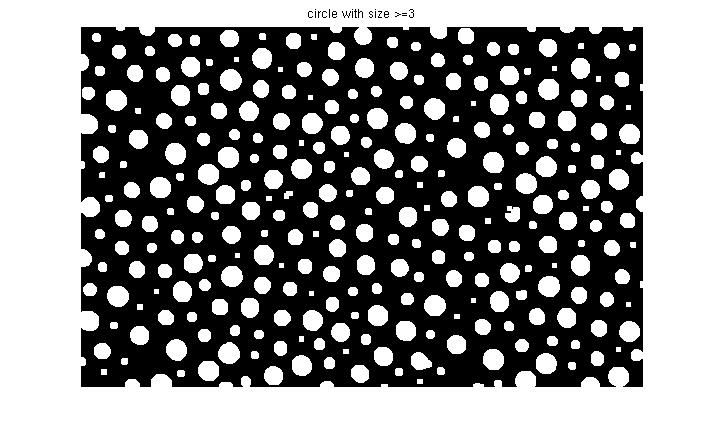 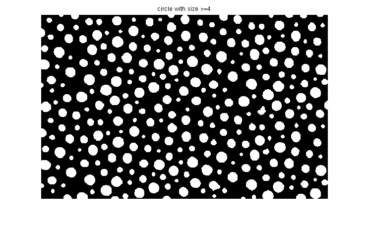 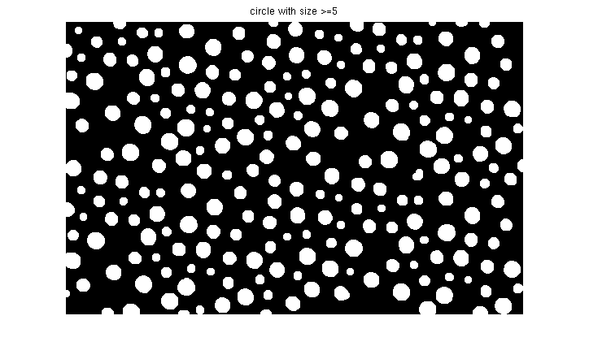 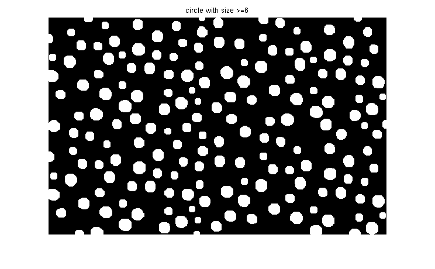 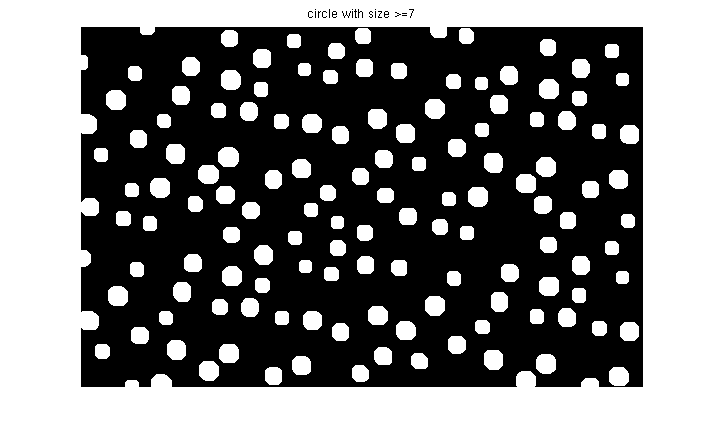 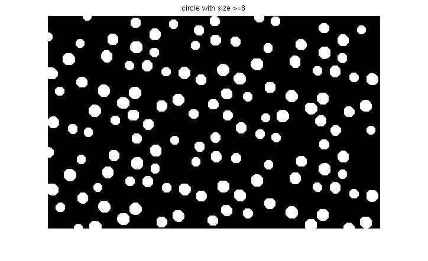 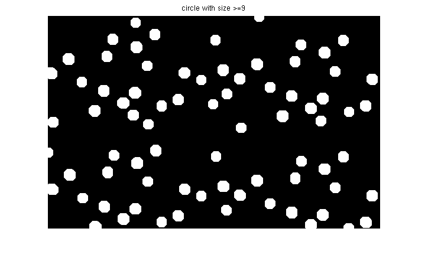 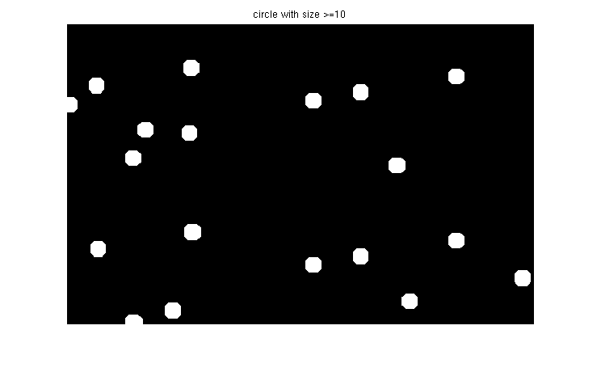 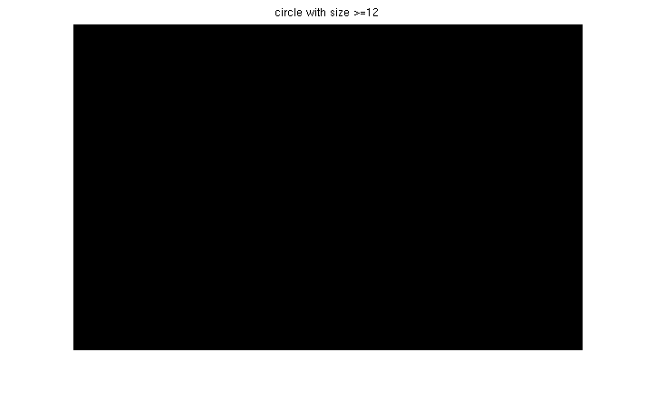 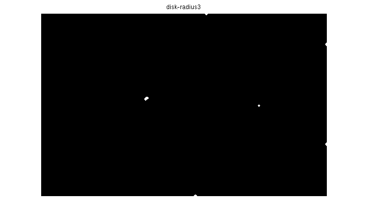 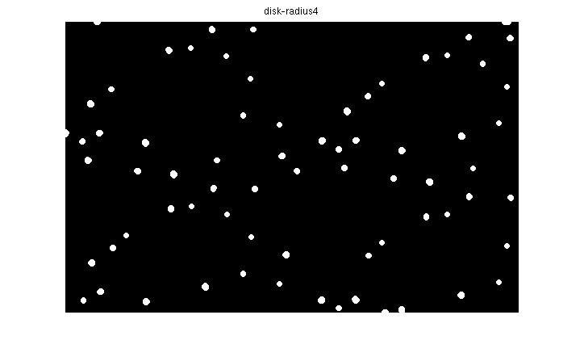 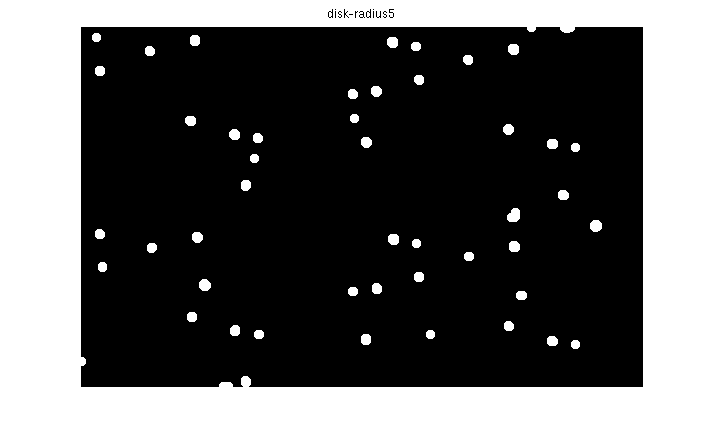 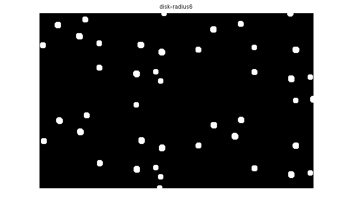 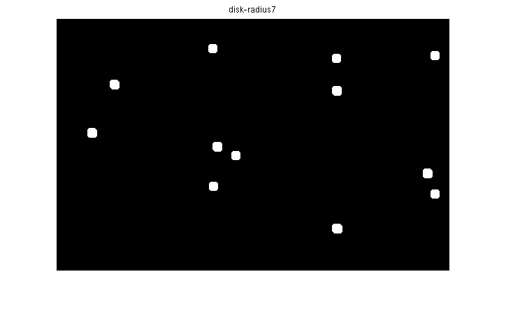 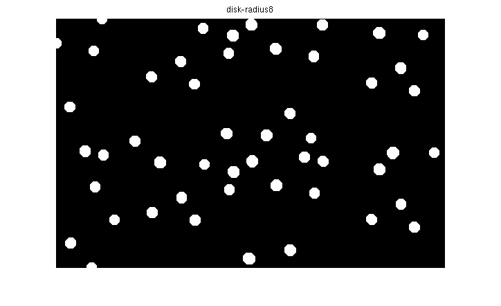 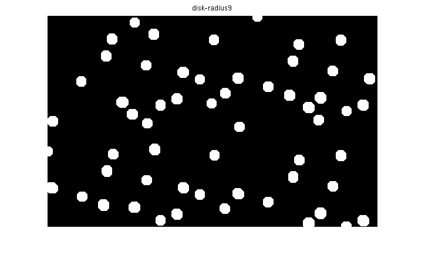 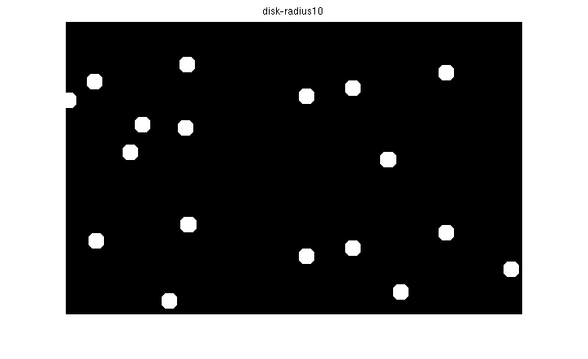 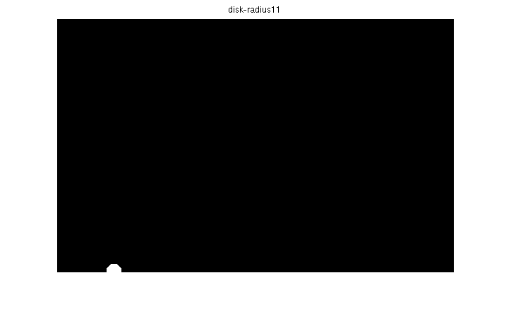